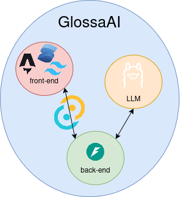

Architecture retenue
L’architecture globale de l’application repose sur une approche cohérente, hybride et orientée performance, répondant à la fois aux contraintes techniques du projet et aux exigences exprimées par la cliente, notamment en matière de souveraineté des données et de pérennité.
Vue d’ensemble
L’application est conçue comme une application de bureau multiplateforme, reposant sur Tauri pour l’encapsulation et l’exécution locale, garantissant ainsi :
- un stockage et un traitement des données en local,
- une faible empreinte mémoire et disque,
- des performances élevées, indépendantes d’un moteur web embarqué lourd.
À l’intérieur de cette enveloppe desktop, l’architecture front-end adopte une stratégie en deux niveaux complémentaires :
Front-End
Astro
- Rendu HTML statique par défaut (content-first)
- Routage et structuration globale de l’application
- Chargement minimal de JavaScript
- Excellente accessibilité et lisibilité du code
- Maintenance facilitée sur le long terme
SolidJS (Astro Islands)
- Gestion des zones interactives ciblées
- Réactivité fine sans Virtual DOM
- Mise à jour efficace des états locaux
- Interactions complexes (tableaux, formulaires, composants dynamiques)
Cette combinaison permet de limiter strictement l’interactivité aux zones nécessaires, tout en conservant un rendu ultra-rapide et une expérience utilisateur fluide.
Back-End
Le back-end repose sur FastAPI, choisi pour :
- ses excellentes performances,
- la validation automatique des données,
- la génération native de documentation interactive,
- sa modernité et son adéquation avec des architectures évolutives.
FastAPI assure la communication entre le front-end et la logique métier, tout en restant parfaitement intégré à un environnement local et sécurisé.
Bénéfices globaux de l’architecture
Cette architecture nous permet de bénéficier du meilleur des différents paradigmes :
- la rapidité et la fiabilité du statique avec Astro,
- la souplesse d’un framework réactif moderne avec SolidJS,
- la robustesse d’un back-end Python moderne avec FastAPI,
- et la sécurité d’une application de bureau légère grâce à Tauri.
En synthèse, les choix technologiques opérés garantissent une application :
- performante dès le premier rendu,
- respectueuse des contraintes de souveraineté des données,
- facile à maintenir et à faire évoluer,
- et offrant une expérience utilisateur moderne, fluide et maîtrisée.
Cette architecture constitue ainsi une base solide, durable et adaptée aux besoins actuels comme aux évolutions futures du projet.
Schéma
Au final, l'application peut être représentée par ce schéma d'architecture
